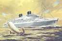
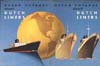

Heute lebt das untergegangene Schiff "Willem Ruys" auf vielen Internetseiten virtuell fort.


Kaum eine der Seiten berichtet aber über den Namensgeber. Willem Ruys, geboren 1894, war Direktor des "Rotterdamsche Lloyd". Er wurde im August 1942 von Deutschen Besatzungsoldaten zusammen mit vier anderen Geiseln hingerichtet, "als represaille voor de daden van een communistische sabotagegroep in Rotterdam op 7 augustus 1942".